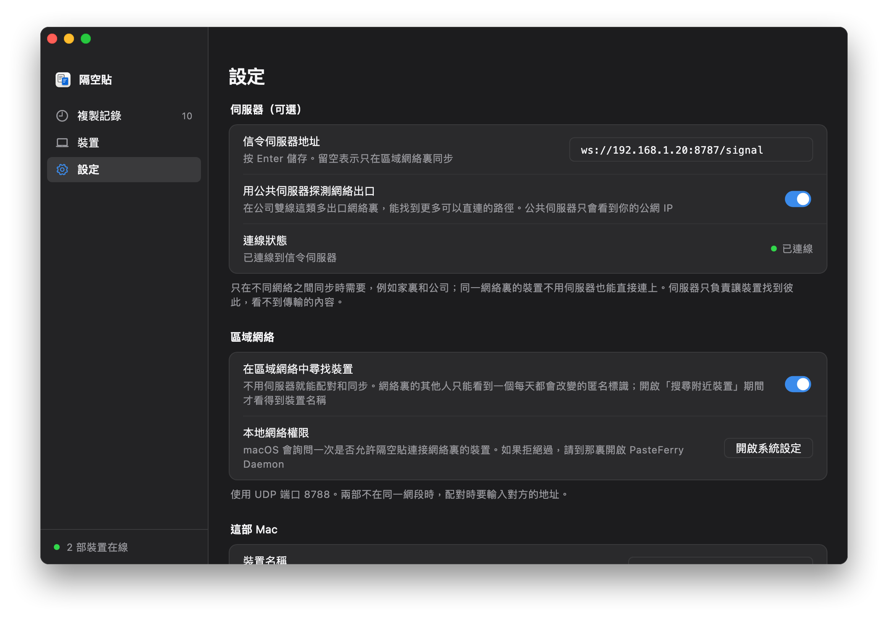

伺服器只負責牽線
每部電腦一直連着伺服器，靠它找到對方、交換連線資訊。連上之後，複製的內容在兩部電腦之間直接傳輸；只有直連打不通時，才經它中轉，內容依然加密。
- 信令，TCP 8787。每部電腦一直連着它，用來發現對方、配對、交換連線資訊。
- 直連。在同一個區域網絡裏，內容幾乎總是在兩部電腦之間直接傳輸，速度就是區域網絡的速度。
- 中轉，UDP 3478。只在訪客網絡、開啟了 AP 隔離的 Wi‑Fi、不同網段之間互相連不上時才會用到。
開始之前
- 一部長期開着的電腦
- Windows 10、11，macOS 13 或以上，或者任何 Linux 都可以，用兩部電腦中的其中一部也行。它關機或睡眠時同步會暫停，醒來後自動恢復。NAS、軟路由、Mac mini 這類長期開着的裝置最合適，只佔約 15 MB 記憶體。
- 一個固定的地址
- 在路由器的「DHCP 靜態分配」（也叫「地址保留」「IP 與 MAC 綁定」）裏給這部電腦固定一個地址。否則路由器換了地址，每部電腦都要重新填寫。
- 在同一個網絡裏
- 裝置連接同一個 Wi‑Fi 或有線網絡就可以。訪客網絡、開啟了「AP 隔離」的 Wi‑Fi 不讓裝置互相連接，需要換一個網絡或關閉隔離。
- 離開這個網絡就不會同步
- 伺服器只能在區域網絡裏連到，手提電腦帶出門後，要回來才會繼續同步。
安裝伺服器
選擇伺服器所在電腦的系統。安裝腳本會自動找出本機的區域網絡地址，把伺服器設為開機自動執行，最後顯示用戶端要填的地址。
Windows
- 下載 pasteferry-server-windows-amd64.zip，按右鍵選擇「解壓縮全部」。
- 開啟解壓出來的資料夾，按兩下
install.cmd。提示「Windows 已保護您的電腦」時，按「其他資訊」，再按「仍要執行」；彈出「使用者帳戶控制」時按「是」。伺服器仍未有程式碼簽署，所以會這樣詢問一次。 - 安裝會在新開啟的視窗裏進行。最後顯示的
ws://…/signal就是用戶端要填的地址。
- 以 Windows 服務形式執行：開機就啟動，不用登入，也沒有視窗。在「服務」裏叫 PasteFerry Server。
- 防火牆已經開放：腳本加入了一條只針對 pasteferry-server.exe 的輸入規則，不用自己開放端口。
- 地址認錯了（例如安裝了虛擬機或 VPN，有好幾張網卡）：在解壓出來的資料夾的網址列輸入
cmd再按 Enter，執行install.cmd 192.168.1.20，換成你的地址。 - 支援 Windows 10、11，x64。
- pasteferry-server.exe
- install.cmd按兩下
- install.ps1
- README.md
- uninstall.cmd
> 停止旧版本 > 安装到 C:\Program Files\PasteFerry Server > 注册服务 PasteFerryServer（中转地址 192.168.1.20） > 在 Windows 防火墙里放行 > 启动 √ 已启动 安装完成：pasteferry-server 2.2.0，作为 Windows 服务开机自动运行 在每台电脑的 PasteFerry「设置 → 信令服务器地址」填： ws://192.168.1.20:8787/signal 程序 C:\Program Files\PasteFerry Server 日志 C:\ProgramData\PasteFerry Server\server.log 重启 Restart-Service PasteFerryServer（管理员 PowerShell） 卸载 双击 uninstall.cmd
| 狀態 | 在系統管理員 PowerShell 執行 Get-Service PasteFerryServer，或者在「服務」裏找 PasteFerry Server |
|---|---|
| 日誌 | C:\ProgramData\PasteFerry Server\server.log |
| 重新啟動 | 在系統管理員 PowerShell 執行 Restart-Service PasteFerryServer |
| 升級 | 下載新版本，解壓後再按兩下 install.cmd，原有設定會保留 |
| 解除安裝 | 按兩下 uninstall.cmd，服務、防火牆規則和檔案會一併刪除 |
macOS
- 開啟「終端機」，逐行執行：
curl -LO https://github.com/baiyuze/pasteferry/releases/latest/download/pasteferry-server-macos.tar.gz tar xzf pasteferry-server-macos.tar.gz cd pasteferry-server-macos ./install.sh - 最後顯示的
ws://…/signal就是用戶端要填的地址。
- 不需要管理員權限。登入這部 Mac 後會自動在背景執行，意外結束會由系統重新啟動。
- 這部 Mac 不能進入睡眠：在「系統設定 → 能源」（手提電腦在「電池 → 選項」）裏開啟避免自動進入睡眠的選項。
- 如果開啟了系統防火牆，腳本最後會提供允許 pasteferry-server 連線的指令。
- Intel 與 Apple 晶片通用，macOS 13 或以上。
% ./install.sh ▶ 停止旧版本 ▶ 安装到 /Users/me/Library/Application Support/PasteFerry Server ▶ 写入 LaunchAgent（中转地址 192.168.1.20） ▶ 启动 ✓ 已启动 安装完成：pasteferry-server 2.2.0，登录这台 Mac 后自动运行 在每台电脑的 PasteFerry「设置 → 信令服务器地址」填： ws://192.168.1.20:8787/signal 日志 /Users/me/Library/Logs/PasteFerry/server.log 重启 launchctl kickstart -k gui/501/com.pasteferry.server 卸载 ./install.sh uninstall
| 日誌 | ~/Library/Logs/PasteFerry/server.log |
|---|---|
| 重新啟動 | launchctl kickstart -k gui/$(id -u)/com.pasteferry.server |
| 升級 | 下載新版本，解壓後再執行 ./install.sh，原有設定會保留 |
| 解除安裝 | ./install.sh uninstall |
Linux
- 在這部機器上（或用 ssh 登入後）逐行執行：ARM 裝置，例如安裝了 64 位元系統的 Raspberry Pi，請把
amd64換成arm64。curl -LO https://github.com/baiyuze/pasteferry/releases/latest/download/pasteferry-server-linux-amd64.tar.gz tar xzf pasteferry-server-linux-amd64.tar.gz cd pasteferry-server-linux-amd64 sudo ./install.sh - 最後顯示的
ws://…/signal就是用戶端要填的地址。
- 註冊為 systemd 服務，開機自動執行。需要 root 權限。
- 如果開啟了 ufw 或 firewalld，腳本最後會提供開放端口的指令。
- 也可以用 Docker：把
env.example複製為.env，TURN_IP填這部機器的區域網絡地址，再執行docker compose up -d。必須使用 host 網絡，所以只適用於 Linux。
$ sudo ./install.sh ▶ 安装二进制到 /usr/local/bin ▶ 写入 systemd 单元 ▶ 生成配置 /etc/pasteferry/server.env（中转地址 192.168.1.20） ▶ 启动 ✓ 已启动 安装完成：pasteferry-server 2.2.0 在每台电脑的 PasteFerry「设置 → 信令服务器地址」填： ws://192.168.1.20:8787/signal 配置 /etc/pasteferry/server.env 日志 journalctl -u pasteferry-server -f 重启 systemctl restart pasteferry-server 卸载 sudo ./install.sh uninstall 防火墙需放行：TCP 8787（信令）、UDP 3478（STUN 与 TURN）、UDP 32768-60999（中转端口，系统随机分配）
| 狀態 | systemctl status pasteferry-server |
|---|---|
| 日誌 | journalctl -u pasteferry-server -f |
| 重新啟動 | sudo systemctl restart pasteferry-server |
| 設定 | /etc/pasteferry/server.env，改完要重新啟動服務 |
| 升級 | 下載新版本，解壓後再執行 sudo ./install.sh，原有設定會保留 |
| 解除安裝 | sudo ./install.sh uninstall |
檢查其他電腦能否連到它
在另一部電腦的瀏覽器開啟 http://192.168.1.20:8787/healthz（換成你的地址），看到下面這一行，就代表網絡是通的。
{"status":"ok","version":"2.2.0"}
開啟不了的話，請看下面的常見問題。
在每部電腦上填寫地址
開啟設定
在每部電腦上開啟隔空貼，進入「設定」。伺服器所在的那部電腦也一樣。
填入地址
在「信令伺服器地址」裏填
ws://192.168.1.20:8787/signal（換成你的地址），按 Enter 儲存。查看連線狀態
「連線狀態」變成綠色的「已連線」就完成了。接着在「裝置」裏配對，之後複製的內容就會同步。

仍未安裝 App？見快速開始。
常見問題
「連線狀態」一直是「未連線」？
先核對地址：以 ws:// 開頭，端口是 8787，以 /signal 結尾，而且填完後按過 Enter。
再在這部電腦的瀏覽器開啟 http://伺服器地址:8787/healthz。開啟不了，代表到伺服器的網絡不通：伺服器沒有在執行、那部電腦進入了睡眠、被防火牆阻擋，或者它的地址改變了。
Windows 的安裝腳本已經開放了防火牆；Mac 開啟了系統防火牆時，請執行安裝腳本最後提供的指令；Linux 上的 ufw、firewalld 也一樣。
裝置之間顯示「中轉」，而不是「直連」？
在同一個區域網絡裏一般都是直連。顯示中轉，代表兩部電腦之間的 UDP 不通，常見於訪客網絡、開啟了 AP 隔離的 Wi‑Fi，或者兩部電腦在不同網段、中間有防火牆。中轉會經過伺服器，內容同樣加密，只是速度受那部電腦的網絡限制。
伺服器的地址改變了怎麼辦？
帶上新地址再執行一次安裝腳本：Windows 上是 install.cmd 新地址，Mac 上是 ./install.sh 新地址；Linux 上編輯 /etc/pasteferry/server.env 裏的 -turn-ip，再重新啟動服務。然後在每部電腦上更改伺服器地址。
在路由器裏給它固定一個地址，就不會再遇到這個問題。
伺服器所在的那部電腦也要用隔空貼，地址應該填甚麼？
填同樣的區域網絡地址就可以，填 ws://127.0.0.1:8787/signal 也行。伺服器和 App 互不影響。
一部長期開着的電腦，就夠了。
版本 2.2.0，免費開源。macOS 13 或以上；Windows 10、11；Linux（x64 與 ARM64）。
伺服器的完整部署說明（包括公網與 Docker）